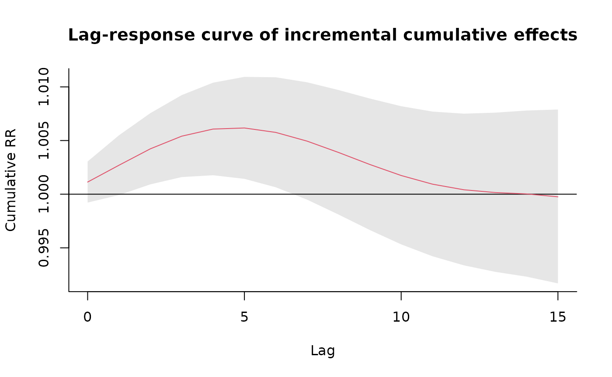

library(splines)
library(dlnm)
#> This is dlnm 2.4.10. For details: help(dlnm) and vignette('dlnmOverview').
# df = data.table(chicagoNMMAPS)
# create the crossbasis objects and summarize their contents
cb1.pm <- crossbasis(chicagoNMMAPS$pm10,
lag = 15, argvar = list(fun = "lin"),
arglag = list(fun = "poly", degree = 4)
)
cb1.temp <- crossbasis(chicagoNMMAPS$temp,
lag = 3, argvar = list(df = 5),
arglag = list(fun = "strata", breaks = 1)
)
summary(cb1.pm)
#> CROSSBASIS FUNCTIONS
#> observations: 5114
#> range: -3.049835 to 356.1768
#> lag period: 0 15
#> total df: 5
#>
#> BASIS FOR VAR:
#> fun: lin
#> intercept: FALSE
#>
#> BASIS FOR LAG:
#> fun: poly
#> degree: 4
#> scale: 15
#> intercept: TRUE
summary(cb1.temp)
#> CROSSBASIS FUNCTIONS
#> observations: 5114
#> range: -26.66667 to 33.33333
#> lag period: 0 3
#> total df: 10
#>
#> BASIS FOR VAR:
#> fun: ns
#> knots: 0.2777778 6.666667 14.44444 20.94444
#> intercept: FALSE
#> Boundary.knots: -26.66667 33.33333
#>
#> BASIS FOR LAG:
#> fun: strata
#> df: 2
#> breaks: 1
#> ref: 1
#> intercept: TRUE
# run the model and get the predictions for pm10
model1 <- glm(death ~ cb1.pm + cb1.temp + ns(time, 7 * 14) + dow,
family = quasipoisson(), chicagoNMMAPS
)
pred1.pm <- crosspred(cb1.pm, model1, at = 0:20, bylag = 0.2, cumul = TRUE)
str(pred1.pm)
#> List of 23
#> $ predvar : int [1:21] 0 1 2 3 4 5 6 7 8 9 ...
#> $ lag : num [1:2] 0 15
#> $ bylag : num 0.2
#> $ coefficients: Named num [1:5] 0.000113 0.001104 -0.007541 0.011702 -0.005406
#> ..- attr(*, "names")= chr [1:5] "cb1.pmv1.l1" "cb1.pmv1.l2" "cb1.pmv1.l3" "cb1.pmv1.l4" ...
#> $ vcov : num [1:5, 1:5] 9.52e-09 -1.09e-07 3.71e-07 -4.84e-07 2.13e-07 ...
#> ..- attr(*, "dimnames")=List of 2
#> .. ..$ : chr [1:5] "cb1.pmv1.l1" "cb1.pmv1.l2" "cb1.pmv1.l3" "cb1.pmv1.l4" ...
#> .. ..$ : chr [1:5] "cb1.pmv1.l1" "cb1.pmv1.l2" "cb1.pmv1.l3" "cb1.pmv1.l4" ...
#> $ matfit : num [1:21, 1:76] 0 0.000113 0.000226 0.000339 0.000452 ...
#> ..- attr(*, "dimnames")=List of 2
#> .. ..$ : chr [1:21] "0" "1" "2" "3" ...
#> .. ..$ : chr [1, 1:76] "lag0" "lag0.2" "lag0.4" "lag0.6" ...
#> $ matse : num [1:21, 1:76] 0.00 9.76e-05 1.95e-04 2.93e-04 3.90e-04 ...
#> ..- attr(*, "dimnames")=List of 2
#> .. ..$ : chr [1:21] "0" "1" "2" "3" ...
#> .. ..$ : chr [1, 1:76] "lag0" "lag0.2" "lag0.4" "lag0.6" ...
#> $ allfit : Named num [1:21] 0.00 -2.44e-05 -4.87e-05 -7.31e-05 -9.75e-05 ...
#> ..- attr(*, "names")= chr [1:21] "0" "1" "2" "3" ...
#> $ allse : Named num [1:21] 0 0.000413 0.000827 0.00124 0.001654 ...
#> ..- attr(*, "names")= chr [1:21] "0" "1" "2" "3" ...
#> $ cumfit : num [1:21, 1:16] 0 0.000113 0.000226 0.000339 0.000452 ...
#> ..- attr(*, "dimnames")=List of 2
#> .. ..$ : chr [1:21] "0" "1" "2" "3" ...
#> .. ..$ : chr [1, 1:16] "lag0" "lag1" "lag2" "lag3" ...
#> $ cumse : num [1:21, 1:16] 0.00 9.76e-05 1.95e-04 2.93e-04 3.90e-04 ...
#> ..- attr(*, "dimnames")=List of 2
#> .. ..$ : chr [1:21] "0" "1" "2" "3" ...
#> .. ..$ : chr [1, 1:16] "lag0" "lag1" "lag2" "lag3" ...
#> $ matRRfit : num [1:21, 1:76] 1 1 1 1 1 ...
#> ..- attr(*, "dimnames")=List of 2
#> .. ..$ : chr [1:21] "0" "1" "2" "3" ...
#> .. ..$ : chr [1, 1:76] "lag0" "lag0.2" "lag0.4" "lag0.6" ...
#> $ matRRlow : num [1:21, 1:76] 1 1 1 1 1 ...
#> ..- attr(*, "dimnames")=List of 2
#> .. ..$ : chr [1:21] "0" "1" "2" "3" ...
#> .. ..$ : chr [1, 1:76] "lag0" "lag0.2" "lag0.4" "lag0.6" ...
#> $ matRRhigh : num [1:21, 1:76] 1 1 1 1 1 ...
#> ..- attr(*, "dimnames")=List of 2
#> .. ..$ : chr [1:21] "0" "1" "2" "3" ...
#> .. ..$ : chr [1, 1:76] "lag0" "lag0.2" "lag0.4" "lag0.6" ...
#> $ allRRfit : Named num [1:21] 1 1 1 1 1 ...
#> ..- attr(*, "names")= chr [1:21] "0" "1" "2" "3" ...
#> $ allRRlow : Named num [1:21] 1 0.999 0.998 0.997 0.997 ...
#> ..- attr(*, "names")= chr [1:21] "0" "1" "2" "3" ...
#> $ allRRhigh : Named num [1:21] 1 1 1 1 1 ...
#> ..- attr(*, "names")= chr [1:21] "0" "1" "2" "3" ...
#> $ cumRRfit : num [1:21, 1:16] 1 1 1 1 1 ...
#> ..- attr(*, "dimnames")=List of 2
#> .. ..$ : chr [1:21] "0" "1" "2" "3" ...
#> .. ..$ : chr [1, 1:16] "lag0" "lag1" "lag2" "lag3" ...
#> $ cumRRlow : num [1:21, 1:16] 1 1 1 1 1 ...
#> ..- attr(*, "dimnames")=List of 2
#> .. ..$ : chr [1:21] "0" "1" "2" "3" ...
#> .. ..$ : chr [1, 1:16] "lag0" "lag1" "lag2" "lag3" ...
#> $ cumRRhigh : num [1:21, 1:16] 1 1 1 1 1 ...
#> ..- attr(*, "dimnames")=List of 2
#> .. ..$ : chr [1:21] "0" "1" "2" "3" ...
#> .. ..$ : chr [1, 1:16] "lag0" "lag1" "lag2" "lag3" ...
#> $ ci.level : num 0.95
#> $ model.class : chr [1:2] "glm" "lm"
#> $ model.link : chr "log"
#> - attr(*, "class")= chr "crosspred"
# plot the lag-response curves for specific and incremental cumulative effects
plot(pred1.pm, "slices",
var = 10, col = 3, ylab = "RR", ci.arg = list(density = 15, lwd = 2),
main = "Lag-response curve for a 10-unit increase in PM10"
)
plot(pred1.pm, "slices",
var = 10, col = 2, cumul = TRUE, ylab = "Cumulative RR",
main = "Lag-response curve of incremental cumulative effects"
)